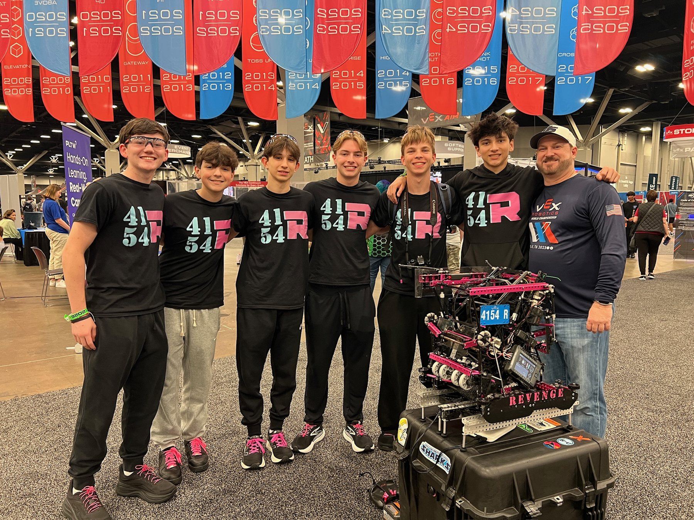
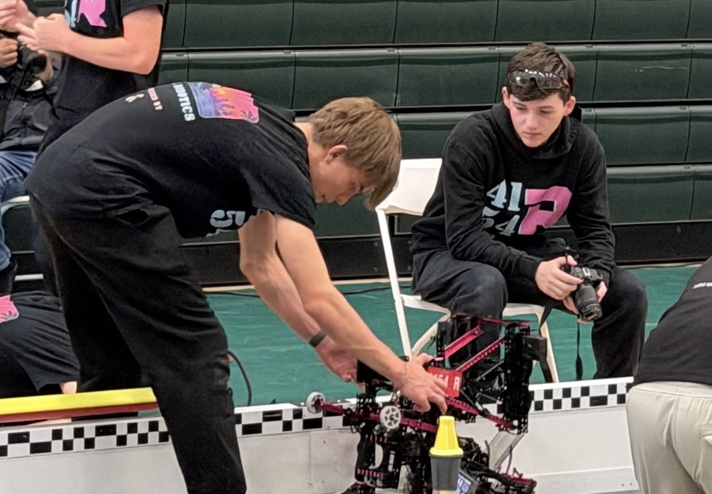
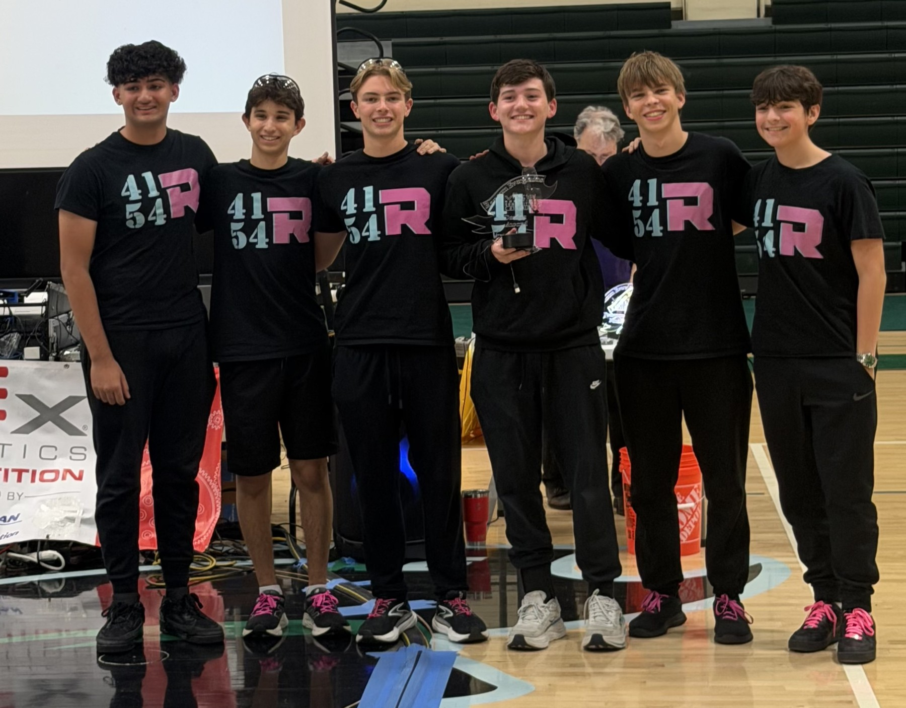
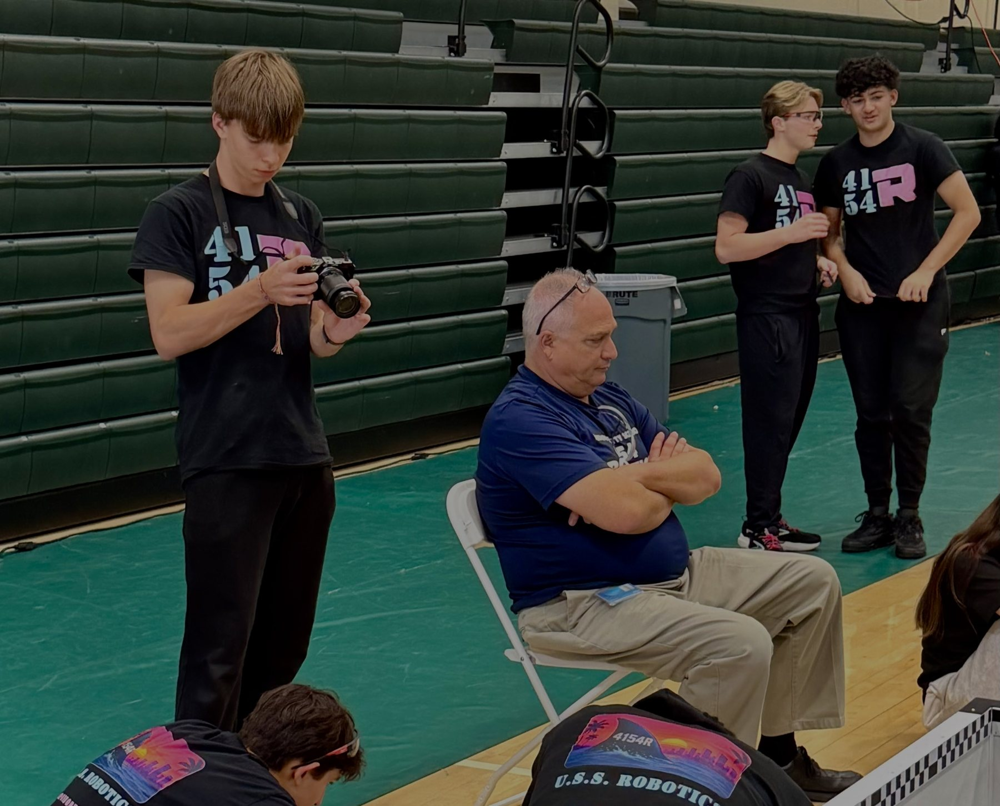
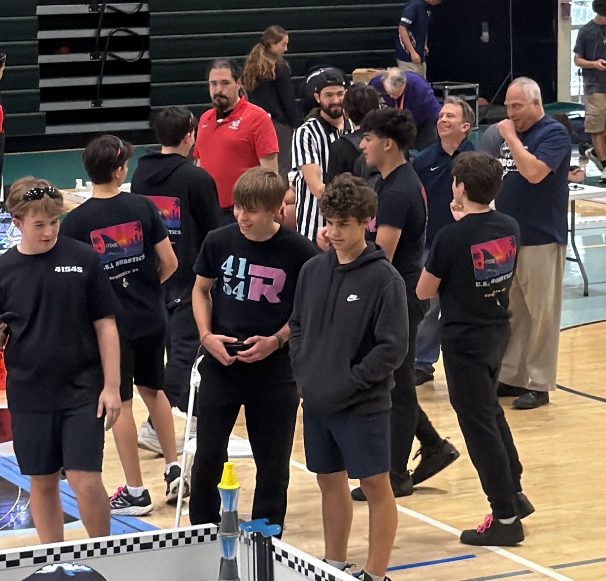
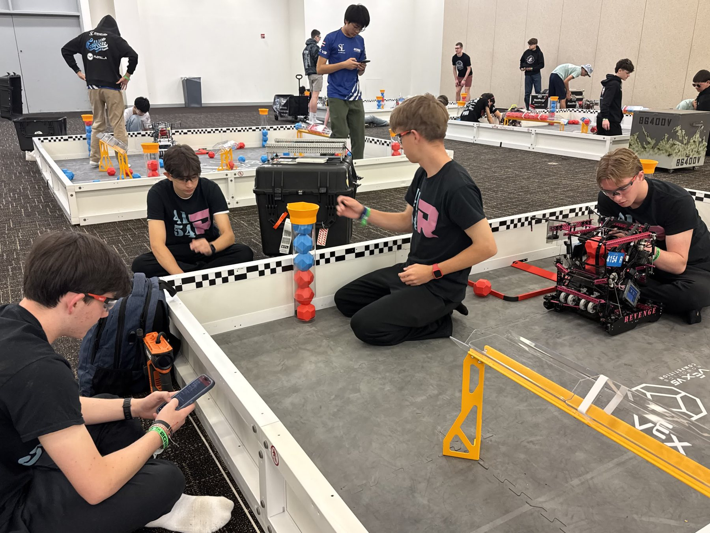
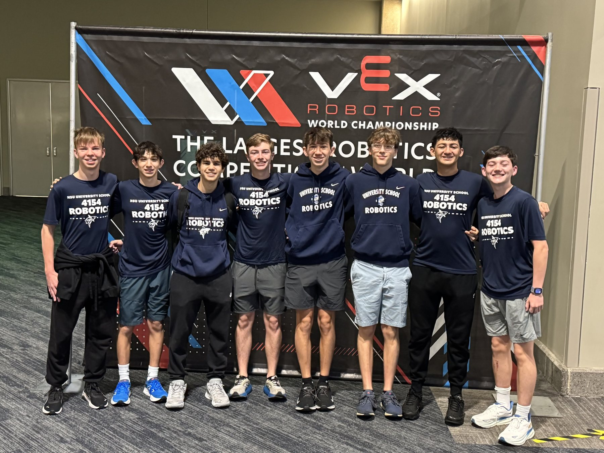

Code that moves.
Building dependable autonomous routines, one test at a time.
← All projects
Make it repeatable.
How do you turn a promising autonomous run into one that works again and again under competition pressure?
Learn from each run.
Consistent results come from testing, documenting what went wrong, and adjusting the next attempt.
The work.
I write autonomous routines and driver-control code in C++ with PROS and EZ-Template, and document our process in the engineering notebook.
Learn from each run.
Our team won the South Florida State Championship, earned a Regional Triple Crown, and qualified for the 2026 VEX World Championship.
From prototype to competition
The Push Back season began with game analysis, brainstorming, and three prototypes. The 327-page notebook traces testing, port maps, autonomous route planning, and match-by-match lessons. In code, reusable drive and turn helpers make routines easier to tune, while a scoring macro coordinates the three-stage intake.
Reliability under pressure
The skills routine evolved through several versions. Timing changes in Skills2 focused on consistency, while the team used results from events to guide the next round of fixes.
On the field
Swipe or scroll sideways to see more.






